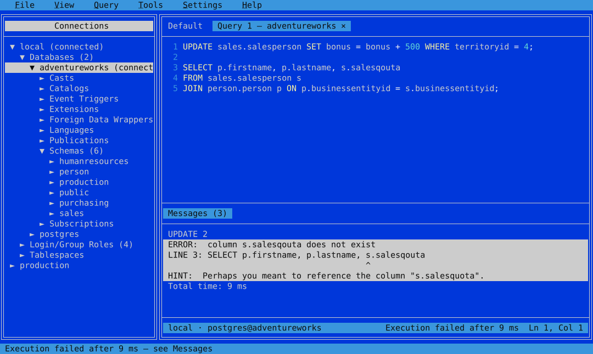
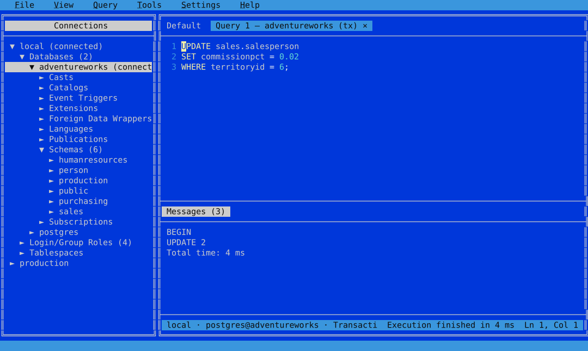

Query tabs
A query tab is an editor with its own session on one database.

Opening a query tab
- Ctrl+N (, or the context menu F2) opens a tab on the database of the tree selection, with its own session — see The sessions pgtc opens on the server. On a server row, Login/Group Roles or Tablespaces there is no database: only a hint is shown.
- Several tabs on one database are separate backends.
- Also opening a query tab: Ctrl+B (first 100 rows), Ctrl+E (edit a definition), (a file).
The parts of a query tab
| Part | Content |
|---|---|
| File bar | Only when the tab has a file: its path, * while unsaved. |
| Editor | See SQL editor and autocomplete. |
| Results bar | Messages (n), then one label per result set: 1: 12 rows, 2: 1,000+ rows. |
| Tab status row | Connection, role and database (local · postgres@adventureworks), transaction status, PL/pgSQL, state of the run; right: cursor position. |
| Key | Action |
|---|---|
| Alt+Down / Alt+Up | Editor ↔ results. |
| Ctrl+R | Hide / show the results pane. |
| Alt+Shift+Up / Alt+Shift+Down | Results pane smaller / larger (mouse: drag the line above the results bar). |
| F6 | Object tree ↔ tab. |
Executing: F5
F5 () sends the selection, or the whole text when nothing is selected. Rows are displayed as they arrive; the UI is not blocked.
Scripts: several statements at once
The text is sent unchanged as one simple-query message, as pgAdmin does; pgtc does not split it. Values come back in text format. Without transaction control of its own, the message is one implicit transaction block:
- a failing statement rolls back the statements before it; those after it are not executed;
VACUUM,CREATE DATABASE,CREATE INDEX CONCURRENTLY,ALTER SYSTEMfail inside a script: select the statement and send it alone;- explicit
BEGIN/COMMITin the script work as written.
Each statement with a row description is a result set; each completed statement leaves its command tag in Messages. A run keeps its newest 10,000 messages: when there are more, the first line says how many earlier ones were dropped; errors are never dropped.
Results

SELECTs, three result sets.| Key | Action |
|---|---|
| Ctrl+PgDn / Ctrl+PgUp (Alt+PgDn / Alt+PgUp) | Next / previous result set — also from the editor. |
| Alt+M | Result set ↔ Messages — also from the editor. |
| Alt+Right / Alt+Left | In the results: cycle through all labels, Messages included. |
After a run the first result set is shown; a run without one ends on Messages. A
SELECT of zero rows is a result set (empty grid with column names).
The grid
| Key | Action |
|---|---|
| Arrows, PgUp / PgDn | Move the cell cursor. |
| Home / End | First / last column. |
| Ctrl+Home / Ctrl+End | First / last loaded row. |
| Ctrl+C / Ctrl+Insert | Copy the cell — the complete value, also when shown truncated. |
| Ctrl+A, Ctrl+C | Copy the loaded rows: tab-separated, with a header row. |
| Alt+End | Fetch all rows. |
| F2 | Context menu: Export result…, Fetch all. |
- Values are the server's text output: they follow
DateStyle,IntervalStyle,bytea_output. - The first column is the row number.
[null](muted) is SQL NULL. Numeric types are right-aligned. - A column is at most 40 characters wide; a longer value ends with
…. A line break is shown as↵, a tab as→; copying gives the real characters.
Large results: 1,000 rows at a time

1,000+ rows.pgtc reads 1,000 rows (the batch; a setting) and then stops reading from the connection: socket backpressure, no cursor, no transaction needed. The backend stays in the statement, blocked sending rows.
- Scrolling near the end of the loaded rows fetches the next batch.
- Alt+End () reads the rest.
A paused result is a statement still executing on the server: it holds its snapshot and locks until all rows are fetched, it is cancelled (Alt+Shift+C), the next statement runs in the tab, or the tab closes.
While a result is paused the session is busy: autocomplete reads no new names, and F7 templates and the generate commands of F4 are refused.
Closing a paused result — on the next execute, Commit or Rollback:
- no transaction was open when the run started and the result belongs to its first statement: pgtc sends a cancel request and waits for it;
- otherwise the remaining rows are read and discarded (a cancel would roll back what the script did before). Messages notes it; the status row shows Closing the result…. Alt+Shift+C then sends a real cancel request, which aborts the transaction.
Messages

| Line | Meaning |
|---|---|
UPDATE 2, SELECT 13, … | Command tag of each completed statement. |
NOTICE:, WARNING:, INFO: | Notice messages (per client_min_messages), shown while the statement executes. |
ERROR: | With DETAIL, HINT and the position in the editor text. |
BEGIN, ROLLBACK | Sent by pgtc for the tab's transaction switches (Transactions). |
NOTIFY: channel "name" (pid 1234): payload | A notification on a channel the session LISTENs on; shown on delivery, also between runs. |
Total time: 21 ms | Elapsed time of the run, measured by pgtc. |
| Key | Action |
|---|---|
| Enter / double click | On an error or notice with a known position: jump to that line in the editor. |
| Ctrl+C | Copy the message under the cursor (all its lines). |
| Ctrl+A, Ctrl+C | Copy all messages. |
| F2 | Context menu. |
Errors

^ position of an undefined column.- A failed run activates Messages.
- As in psql, the error is followed by
LINE n:and a^, computed from the error's position field; n is the line in the editor, also when only a selection was sent. - Result sets of statements that had completed stay in the results bar — although the implicit transaction of the script was rolled back as a whole.
- Enter on the error moves to the editor and selects the token at the position.
Errors raised inside a DO block or in PL/pgSQL mode carry no position in the sent text: pgtc
takes the line from CONTEXT (PL/pgSQL function inline_code_block line N …) and, for a
failing SQL statement inside the block, the column from the internal query and internal position. Positions are
those at the time of the error; after edits a jump may be off.
Cancelling a query
Alt+Shift+C () sends a cancel request for the tab's backend over a separate connection. It also ends a paused result and stops a running export.
If the run has not ended after 5 seconds (a setting), pgtc asks The server did not react to the cancel request. Close this query tab's session? Close session drops this tab's session (an open transaction is lost); the tab keeps its text and the next F5 opens a new session. Keep waiting waits on.
Transactions
Two switches per tab, in the menu; a new tab takes them from Settings.
| Switch | Default | On | Off |
|---|---|---|---|
| Auto commit | on | pgtc sends no transaction control (the server's autocommit, as in psql). | Before a run, if the transaction status is idle, pgtc sends BEGIN. The block stays open until / . |
| Auto rollback on error | off | After a failed run that leaves a block open, pgtc sends ROLLBACK. | The block stays aborted until rolled back. |

BEGIN pgtc sent, the tab marked (tx).pgtc shows the transaction status the server reports after every request — however the block was opened (a
BEGIN typed in the editor counts too):
| Tab label | Status row | Transaction status |
|---|---|---|
(tx) | Transaction open | In a transaction block. |
| Transaction aborted – ROLLBACK needed | In a failed transaction block. |
Commit, Rollback and the two switches have no default key; bind them in
keymap.toml, or execute COMMIT; /
ROLLBACK; from the editor. The dashboard lists a tab left on
(tx) as idle in transaction.
PL/pgSQL mode
Ctrl+P () toggles the mode per tab: the editor text is
the body of an anonymous code block, sent as DO $pgc$ … $pgc$;. If the text has no
BEGIN … END, pgtc adds it.

RAISE NOTICE output in Messages.- Errors and notices jump to the editor line with Enter, as in SQL mode.
- A
DOblock returns no result set:RAISE NOTICE, or fill a temporary table and select from it in SQL mode in the same tab. - The text must not contain
$pgc$. - The transaction switches apply as in SQL mode.
gtcandgtsiof the F4 command line generate PL/pgSQL skeletons for a table.
Closing a query tab and quitting
Ctrl+W, a click on the tab's ×, or ends the
tab's session; a statement still executing is cancelled.
- Unsaved text: Yes closes the tab only after the file was written. The question can be turned off (, Ask to save query tabs when closing); unsaved text is then discarded silently.
- Open transaction: Commit sends
COMMIT, then closes; Rollback just closes the session. - Quitting (F10) asks about unsaved text tab by tab, then once for all open transactions (Commit all / Rollback all). Cancel at any point stops quitting.
- Disconnecting a server closes its query tabs with the same questions.
Good to know
- Lost session. The tab keeps its text and says not connected; the next F5 opens a new session.
COPY … FROM STDIN/TO STDOUTis not supported yet (the server's error is shown). Server-sideCOPYworks, as does exporting a result.- psql meta-commands in a script are not interpreted. The everyday ones are on F4 — see psql-style commands.
- Session state (
SET search_path,SET ROLE, temporary tables, prepared statements,LISTEN, advisory locks) belongs to the tab's session only. - No bind parameters. Editor text always goes through the simple query protocol; for
$1usePREPARE/EXECUTE.